SmartStamp Web
SmartStamp is the integrity layer for physical artworks and collectibles, built for galleries, auction houses and other art businesses. The web platform keeps each piece's fingerprint, provenance record and documents in one place, on top of the tools a gallery already uses.
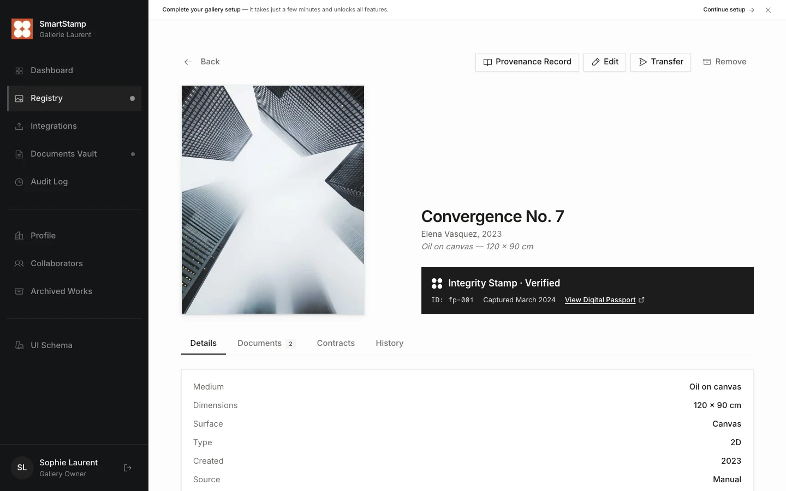
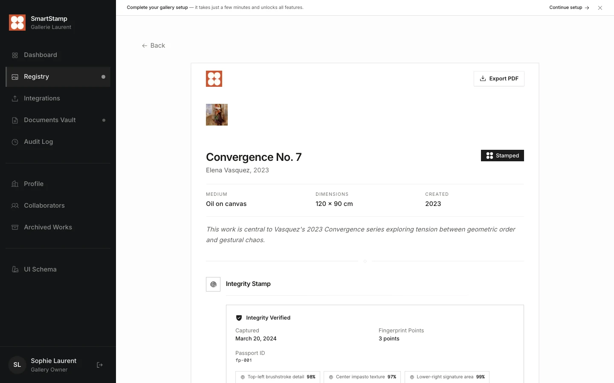
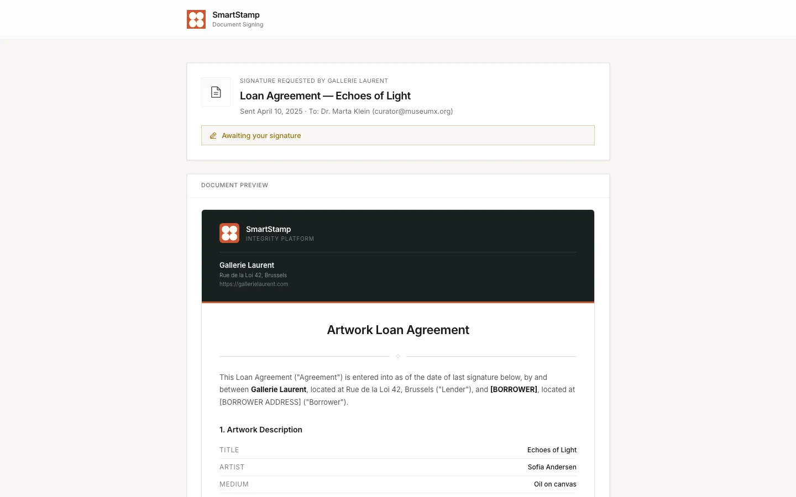
Overview
Most gallery software stops at inventory. SmartStamp also links each record to the physical object, whether an artwork or a collectible. Each piece is registered with microscopes mounted on gantries, which capture the surface texture of selected details as a digital fingerprint. The piece can then be verified with a mobile phone or with another microscope, by matching new captures against that fingerprint. The web platform holds everything around it: the ownership history, documents and signatures, and collection data imported from CSV files or the mobile app.
My role
- Role
- Head of Product, previously Founding PM
- Team
- Engineering and UX, reporting to the CEO
- Scope
- Web platform, mobile app and fingerprint registration
Decisions
- Repositioned the product from mobile-first to web-first after usage data showed that galleries and auctioneers, not individual collectors, were driving adoption.
- Prototyped the web platform hands-on in code and Figma, so engineering built from a working specification. The screens on this page come from that prototype.
- Defined the North Star metric and its supporting KPIs, and built the PostHog dashboard the team uses to track them.
Outcome
Fingerprint registration went live, gallery partnerships were signed and pilot talks opened with tier-1 Swiss and global auction houses. The web platform is live as SmartStamp Vault.
Fingerprint registration and verification
- Gained
- Every capture is taken the same way, so later checks compare against a reliable fingerprint.
- Gave up
- Registration needs the microscope setup on site, so every new customer needs an onboarding visit.
The microscopes sit on gantries and capture close-up images of selected surface details such as brushwork, gilding and engraving. Together these images form the fingerprint of the piece. At verification, each matched detail returns a score. Verified works carry the Integrity Stamp across the web app, and unverified ones show a muted outline badge.


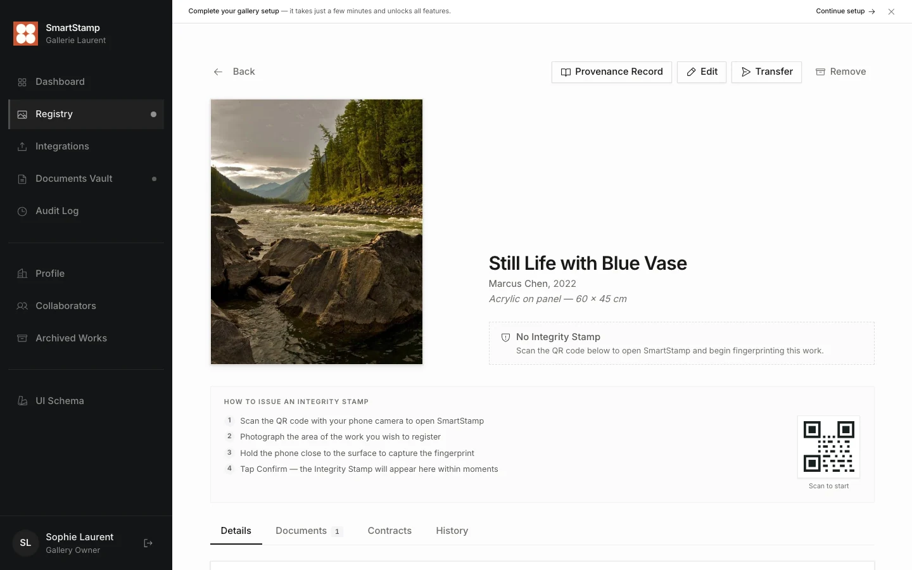
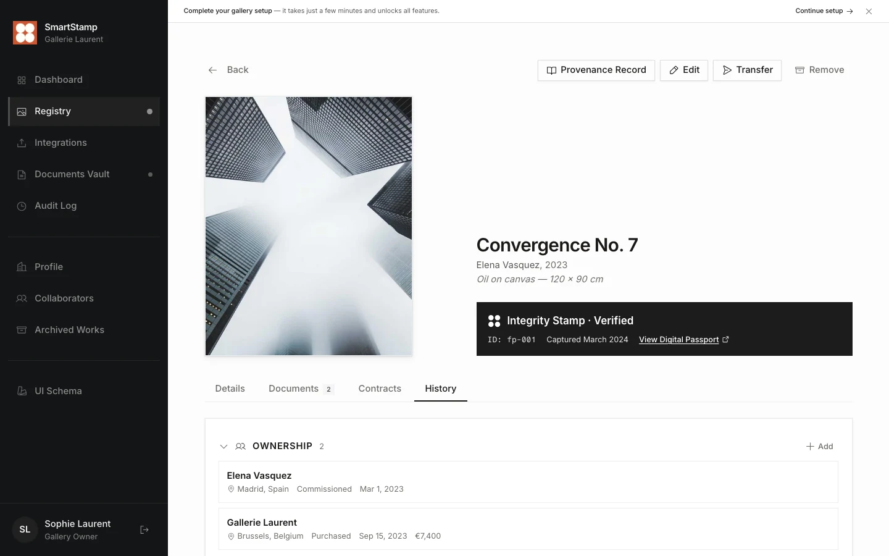
Collection registry
- Gained
- Customers keep their current system and don't have to re-enter their inventory.
- Gave up
- The data lives in two places, and imported records carry over any errors until they are corrected in SmartStamp.
The registry starts from a CSV export and adds verification. It has two views, a masonry grid (24 items per page) and a data table (50 items). The view, filters and search query live in the URL, so back and forward behave as expected and a filtered view can be shared as a link. Search covers title, artist and medium as you type, and one click narrows the list to stamped or unstamped works.
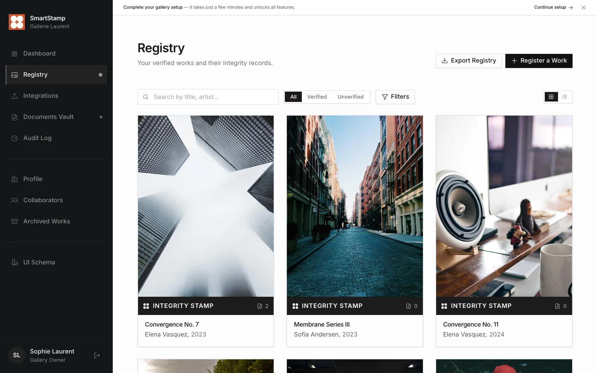
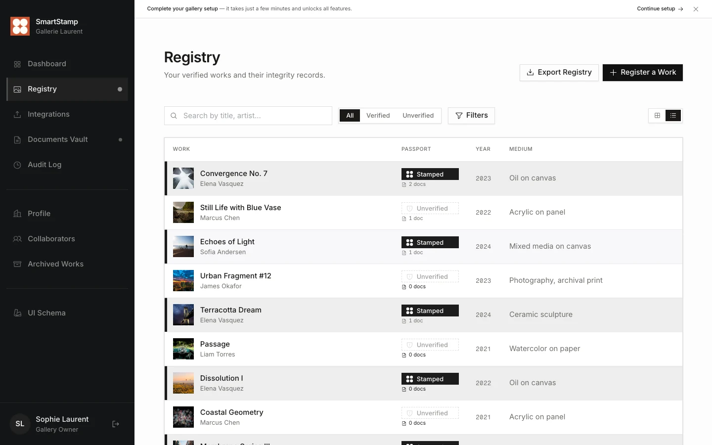
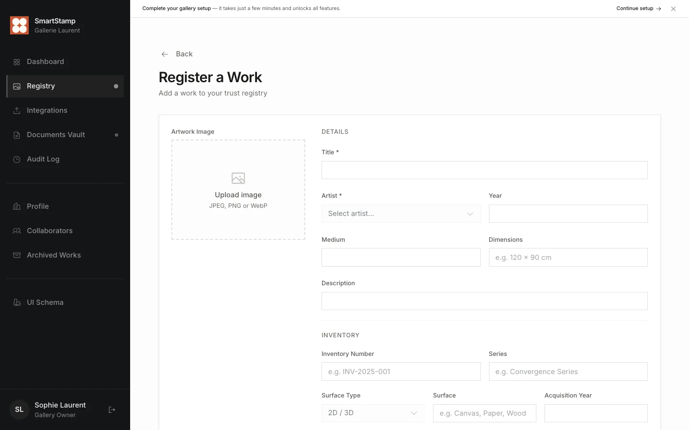
Provenance record
- Gained
- Anyone can check when an entry was recorded without relying on SmartStamp, and only the hash leaves the platform.
- Gave up
- Hashes are written to the blockchain in batches, so an entry can only be proven once its batch is confirmed.
Provenance is only worth something if no one, SmartStamp included, can change it without leaving a trace. A record has five parts: ownership history (acquisition method, price, verified status), exhibition appearances, publications, appraisals in any currency, and condition reports with photo attachments. Each addition goes into the artwork's SHA-256 hash trail with a timestamp.
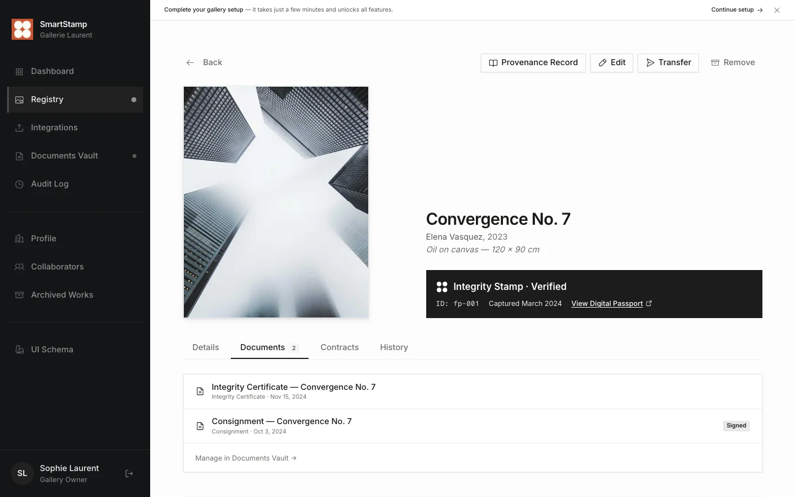
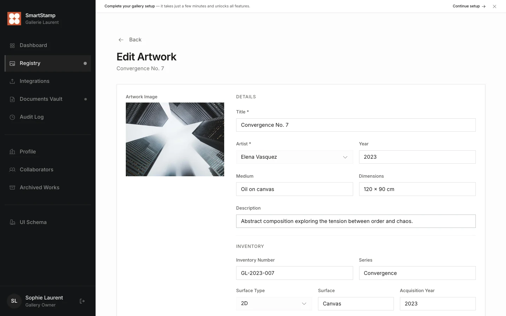
Document generation and signing
- Gained
- Buyers, lenders and museums can sign without creating an account with a business they may only deal with once.
- Gave up
- A link proves less about the signer than a login does, which is why every signing event goes into the hash trail.
SmartStamp generates 13 document types for artworks and 6 for the business itself, all from branded HTML templates. Content stays editable until it is locked, and each document moves from draft to pending to signed.
Documents are kept in an audit-proof archive certified against the Swiss rules for keeping business records (GeBüV). Each one carries proof that it hasn't changed since it was stored, and every access is logged.
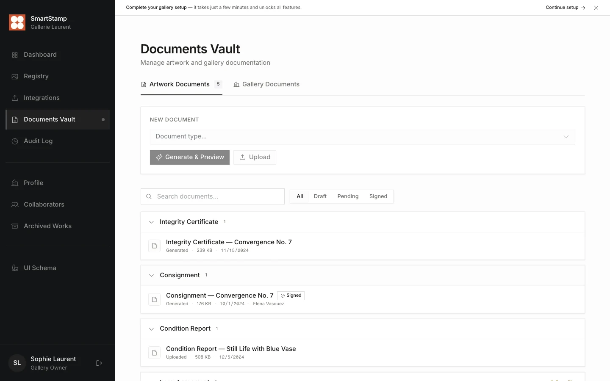
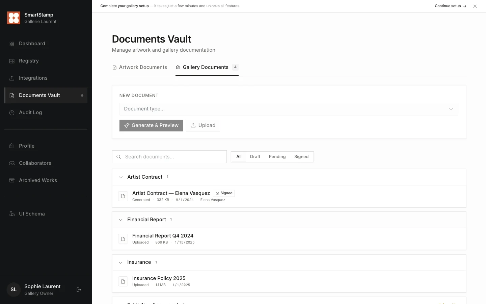
Collection integrity dashboard
- Gained
- Customers see how much of their collection can already be verified and what is still missing.
- Gave up
- Coverage says nothing about how often works are checked. Verification activity stays in the team's PostHog dashboard.
Below the coverage bar sit a breakdown of where works came from (CSV, mobile app or manual entry), a summary of the documents vault and a recent activity feed. Coverage is one of the three inputs to the North Star, set out under Metrics and KPIs.
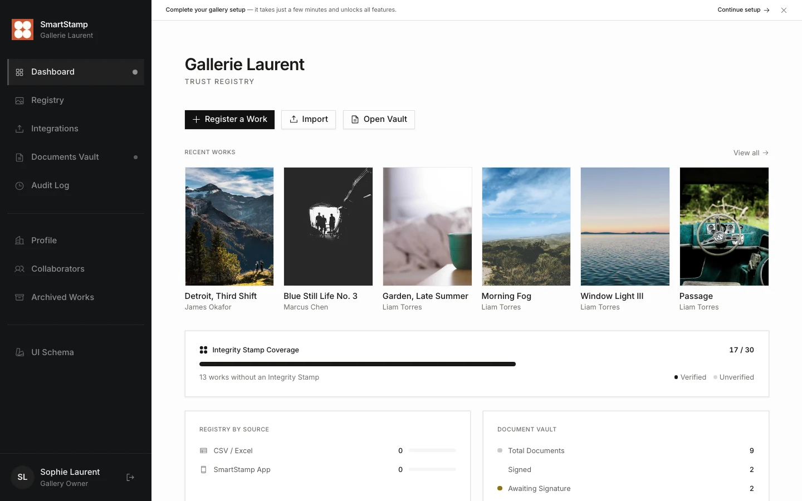
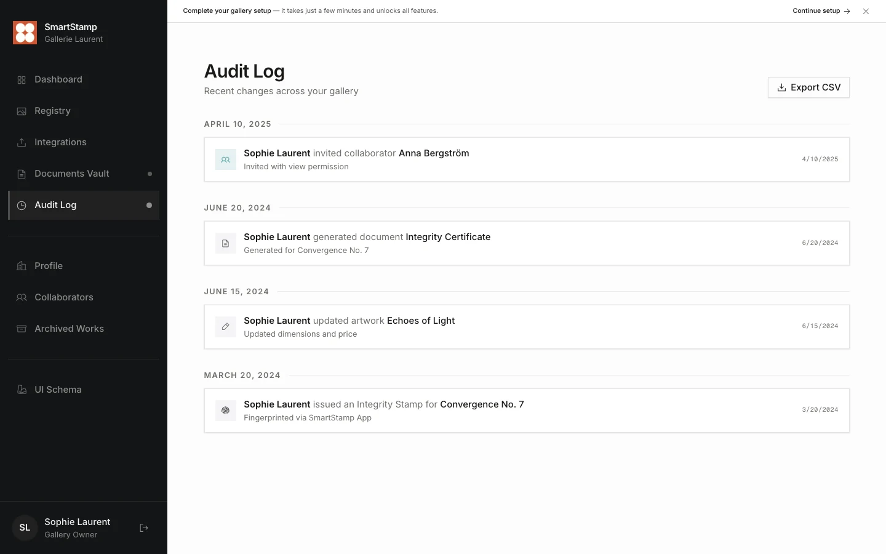
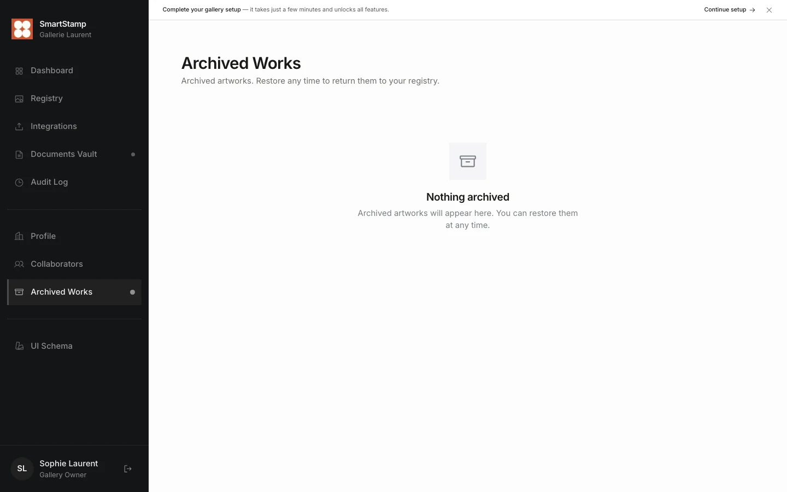
Metrics and KPIs
- Gained
- It rises when customers use their fingerprints, and it changes earlier than renewals.
- Gave up
- Verifications follow sales, loans and consignments, so the monthly figure is lumpy and slow to react. The input metrics give the team a weekly signal.
A running total of registered works would only record onboarding that already happened, and a raw count of scans would reward checking the same work twice. The North Star counts each verified work once per month instead. It moves slowly, so three input metrics sit under it and give the team something to act on every week. Health metrics check that the trade-off behind each feature stays acceptable, and the renewal rate is the outcome the North Star should predict. The product metrics come from events in PostHog and are reviewed every week. When a number moves and the events don't explain why, session replays of selected journeys show where people hesitate or give up.
| Metric | How it is measured | Why it matters |
|---|---|---|
| Works verified per monthNorth Star | Unique works with at least one completed verification in the calendar month, on the web or in the app. | Verification is when the customer gets value from a fingerprint. It is the earliest sign of whether they will renew and register more works. |
| Fingerprint coverageInput | Fingerprinted works divided by all works in a customer's registry. | A work has to be registered before anyone can verify it. Customers see this number first on their dashboard. |
| Days to first verificationInput | Median days between a work's registration and its first verification, grouped by the month of registration. | It shows how quickly registration turns into use. A rising figure means works are being registered that nobody checks. |
| Accounts verifying weeklyInput | Customer accounts with at least one completed verification in the week. | It shows whether verification is spreading across customers or resting on a few large accounts. |
| Verification match rateHealth | Share of completed verifications where the fingerprint matches with a confident score. | A drop points at capture quality, at registration or at the check, before customers start doubting the result. |
| Works registered per visitHealth | Works fingerprinted during each onboarding visit. | Registration needs the microscope setup on site, so this is the cost side of bringing in a collection. |
| Clean import rateHealth | Share of imported records that need no correction after a CSV import. | Imported records carry over errors, so this shows how much clean-up the registry depends on. |
| Time to signatureHealth | Median time from sending a document to its last signature. | Signing by link exists to keep paperwork moving, and this shows whether it does. |
| Account renewal rateOutcome | Share of customer accounts that renew when their term ends. | This is the result the North Star should predict. It changes too slowly to steer by week to week. |
Design system
Details
The UI follows the look of a gallery viewing room: warm whites, near-black text, sharp edges (no border radius except on pills) and restrained colour. Orange is reserved for the brand. Verified works carry a near-black Integrity Stamp, and unverified works a muted grey outline. Colours, shadows and spacing are defined once as design tokens and reused on every screen.
#111111
#1e5459
#b8502f
#a09b94
#9a7a07
#fcfcfc
Colour tokens
- Display: Playfair Display, for page titles
- Body: Inter, 13px to 20px, line height 1.75
- Data and IDs: Fragment Mono
Typography
Border radius